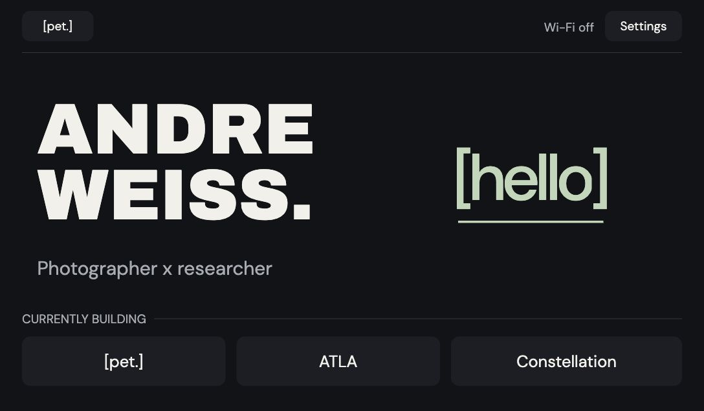
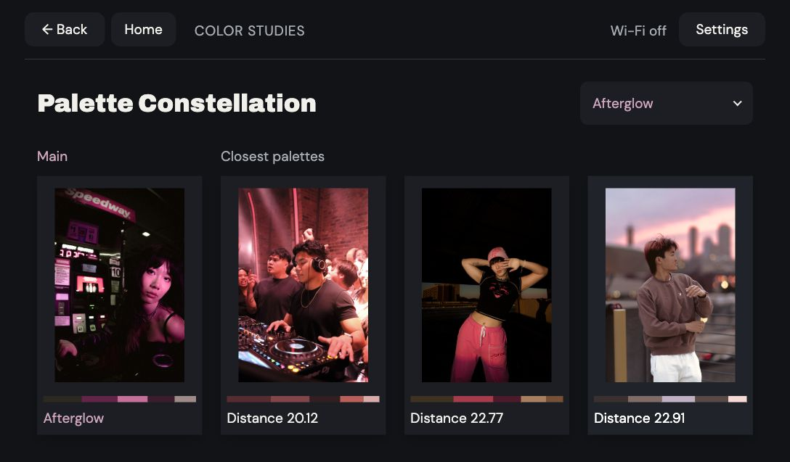
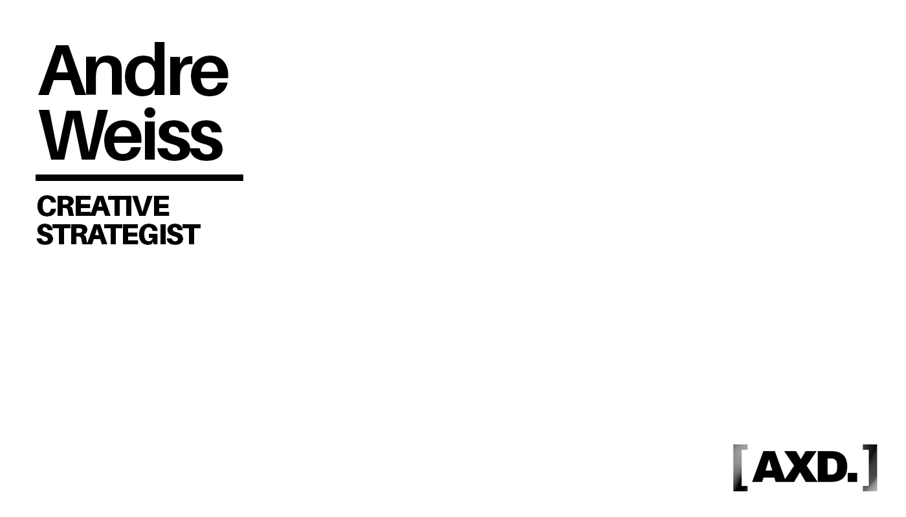

2026 / PERSONAL ENGAGEMENT TOOL
[pet.]
A small device.
A more memorable hello.

Go ahead. Say hello.
Tap the screen, or use Try Hello below for a guided introduction. Reset starts again.
Current OS · simulated phone and NFC events · no live introductions
01 / Why PET exists
A project to show.
A hello to remember.
I wanted to share what I’m making while talking to someone in person. PET puts the work in the conversation.
- Today
- A working touch-display prototype, a phone-based Hello flow, and tested NFC card links.
- The possibility
- A portable portfolio paired with customizable cards that remember how we met.
- On PETOpen Hello.
- On your phoneScan. Introduce yourself.
- On the NFC cardCarry the context forward.
02 / Designing the interaction
Small screen.
Deliberate choices.
Room for the work.
Landscape gives projects and useful information room beside the greeting. A vertical layout stacks the same conversation into a narrower space.
Layout comparison · portrait is a concept.
WEISS.Photographer x researcher[hello]CURRENTLY BUILDING
Does a photograph need full color?
Photography first drew me to a color LCD. But composition can hold its own in monochrome—opening a different display direction.
A visual study, not an e-ink simulation.

Let the card be the point of contact.
The RC522 reads and writes tags; it doesn’t act as a phone-tappable card. A QR starts the introduction. The finished card becomes the tap point.
Each card opens a personal greeting and, with permission, the topic we connected over. A reminder of our conversation.

03 / Building the prototype
Learning across
screens, wires, and a shell.
My first ESP project: HTML/CSS to try the screens, AI coding help for firmware, then wiring the NFC reader, testing card links, and revising the case in CAD.
Inside the build
138 × 96 × 22.4 mm. The shell has been printed. This render uses the final CAD geometry with the current OS on screen.
The tighter backing and longer switch are CAD-checked revisions; their physical fit still needs testing.
Waveshare touch display ↗RC522 NFC reader ↗3.7 V LiPo battery ↗Transparent NTAG213 stickers ↗
04 / Testing in the field
What happens when
everyone says hello?
Peer testing and a demo at an Accenture networking event brought PET into real conversations. Simultaneous introductions exposed an unfinished interaction.
- Observation
- Several hellos can arrive at once.
- Design implication
- Each person needs a clear acknowledgment.
- Open question
- How do we keep every exchange distinct?
Working toward V2.
Development hasn’t started. Display choice, card design, and concurrent hellos remain open.
Try the current prototype ↑